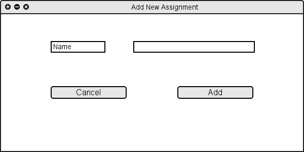
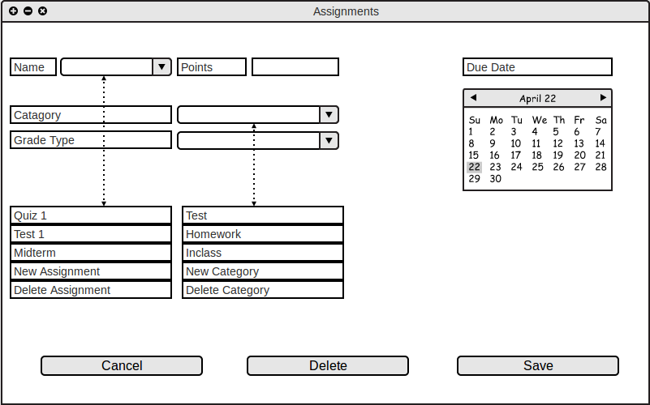

The user can add an assignment by clicking on New Assignment under "Name" drop down list. Similarly the user can add new category of assignments by clicking New Category under "Category" drop down list.
Figure 2.4.1 A: Adding New Assignment / Category
After clicking the "New Assignment", the software shows the figure 2.4.1 B. In this dialouge the user can specify a name for the assignment and save it.

Figure 2.4.1 B: Adding New Assignment
Similarly, after clicking the "New Category", the software shows the figure 2.4.1 C. In this dialouge the user can specify a name of the category of assignments.

Figure 2.4.1 C: Adding New Category

Figure 2.4.1 D: After adding assignments and categories

Figure 2.4.1 E: Prepared assignment